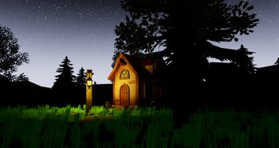

Selected work
All 8 games →
Released games
Capstone · Level Up 2025
Cattleman's Crossing
A year-long York University capstone, released on itch.io and presented at the Level Up Showcase 2025 in Toronto. I built core gameplay systems and Blueprint logic, handled final build integration, and managed the team's Git workflow for all 12 months.
Play on itch.io →Lead Developer
HorrorHugger
A story-driven maze game. I led sprint planning, code review and integration, and designed the "hug & shove" combat mechanic.
Play on Game Jolt →Gameplay Programmer
Grave Runner
Two genre variants, Boss Rush and Boss Run, released from a single codebase. I implemented the gameplay loop for each variant.
Play on itch.io →Solo

Walks on Your Skin
A first-person narrative experience. I built the player controller, narrative triggers, ambient audio system and environmental interactions myself.
Play on itch.io →